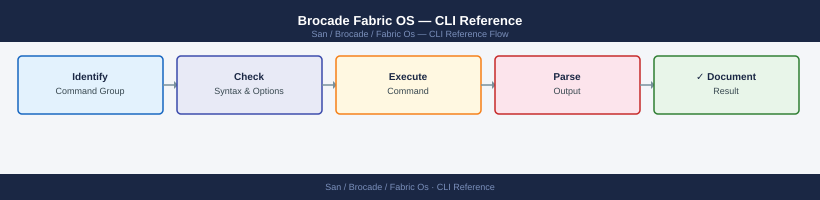

Brocade Fabric OS — CLI Reference¶
Applies to: Brocade FOS 9.x

switchshow # ports, state, speed, and connected WWNs — most useful daily command
switchstatusshow # overall switch health status (expected: HEALTHY)
version # Fabric OS version
ipAddrShow # management IP addresses
licenseShow # installed licenses
chassisShow # chassis hardware inventory
slotShow # blade/slot population
switchshow
Switch ID Worldwide Name Model Serial Num Status
------------------------------------------------------------------
1 50:00:14:40:5a:2b:c1:00 Brocade 6510 ABC123456 Online
0 1 2 3 4 5 6 7 8 9 10 11 12 13 14 15
--+--+--+--+--+--+--+--+--+--+--+--+--+--+--+--
Lx Lx Lx Lx Lx Lx Lx Lx Lx Lx Lx Lx Lx Lx Lx Lx
Port 0: ACTIVE at 16 Gb/s -- Connected: 50:00:14:41:2d:8c:a2:10
Port 1: ACTIVE at 16 Gb/s -- Connected: 50:00:14:41:2d:8c:a2:11
Port 2: ACTIVE at 16 Gb/s -- Connected: 50:00:14:41:2d:8c:a2:12
Port 3: ACTIVE at 16 Gb/s -- Connected: 50:00:14:41:2d:8c:a2:13
Port 4: ACTIVE at 16 Gb/s -- Connected: 50:00:14:41:2d:8c:a2:14
...
switchstatusshow
Switch Status: HEALTHY
version
Fabric OS: v9.1.0
ipAddrShow
Ethernet IP Address: 192.168.1.50
Ethernet Netmask: 255.255.255.0
Ethernet Gateway: 192.168.1.1
licenseShow
License Status: VALID
Installed Licenses:
- Advanced Performance Monitoring
- Extended Fabric Services
chassisShow
Chassis Serial Number: ABC123456
Chassis Type: Brocade 6510
Power Supply 1: ONLINE
Power Supply 2: ONLINE
Fan Module 1: ONLINE
Fan Module 2: ONLINE
slotShow
Slot 1: Populated (Port Module)
Slot 2: Populated (Port Module)
Slot 3: Empty
Common errors
switchshow: command not found — Ensure you are logged into the Brocade switch CLI directly (SSH/Telnet), not a Linux host; these commands run on the switch OS, not the management station.
Switch Status: OFFLINE — Check physical power and network connectivity to the switch; verify all power supplies and fan modules are operational via chassisShow.
License Status: EXPIRED — Contact Brocade support or your vendor to renew the license; use licenseShow to identify which licenses have expired and plan renewal before they affect fabric operations.
psShow # power supplies
fanShow # fan status
tempShow # temperature sensors
sensorShow # all environmental sensors
Power Supply Status:
PS1: ON (12V: 12.1V, 5V: 5.0V)
PS2: ON (12V: 12.0V, 5V: 5.1V)
Fan Status:
Fan1: OK (8500 RPM)
Fan2: OK (8450 RPM)
Fan3: OK (8520 RPM)
Temperature Sensors:
Sensor1 (CPU): 52°C (Normal)
Sensor2 (Backplane): 48°C (Normal)
Sensor3 (PSU1): 45°C (Normal)
Environmental Sensors:
Power Supply 1: 12.1V, 2.3A
Power Supply 2: 12.0V, 2.4A
Fan 1: 8500 RPM (OK)
Fan 2: 8450 RPM (OK)
Temperature 1: 52°C (Normal)
Temperature 2: 48°C (Normal)
Common errors
Command not found: psShow — Verify you are logged into the Brocade switch CLI (not SSH shell) and have appropriate admin privileges.
Error: Environmental monitoring not available — Ensure the switch has completed POST and all hardware modules are properly seated; reboot if necessary.
10:47:23 up 142 days, 3:22, 0 users, load average: 0.12, 0.08, 0.05
Trap Destination IP Address: 192.168.1.50
Trap Destination Port: 162
Community String: public
SNMP Version: v2c
Engine ID: 800007E5034D42544F5F53574954434831
Syslog Server IP: 10.20.30.40
Syslog Server Port: 514
Syslog Facility: local0
Syslog Severity: informational
Syslog Protocol: UDP
Common errors
snmpConfig: command not found — Verify SNMP is enabled on the switch using snmpEnable and check user permissions.
syslogDIPShow: command not found — Use the correct command syslogShow or access syslog configuration via configShow | grep syslog.
switchshow
Switch ID : 100
Switch Name : brocade-switch-01
Switch State: Online
Enet IP Addr: 192.168.1.50
FC Port Count: 16
Model: Brocade 6510
switchstatusshow
Switch Status: OK
Temp Sensor 1: 42°C (Normal)
Temp Sensor 2: 41°C (Normal)
Power Supply 1: OK
Power Supply 2: OK
Fan 1: OK
Fan 2: OK
fabricshow
Switch ID Worldwide Name Enet IP Addr FC Name
100 10:00:00:05:33:a1:2b:10 192.168.1.50 brocade-switch-01
101 10:00:00:05:33:a1:2b:11 192.168.1.51 brocade-switch-02
nsShow
Permanent Port WWN : 50:00:00:05:33:a1:2b:10
Permanent Node WWN : 20:00:00:05:33:a1:2b:10
Name Server Enabled : Yes
Registered Devices : 12
aliShow
Alias Name Member
prod-storage-01 50:00:14:40:5a:b2:c3:d4
prod-storage-02 50:00:14:40:5a:b2:c3:d5
backup-server 50:00:14:40:5a:b2:c3:d6
zoneShow --all
Zone Name: prod-zone-01
Members: prod-storage-01; prod-server-01; prod-server-02
Zone Name: backup-zone
Members: backup-server; backup-client-01
Zone Name: dr-zone
Members: prod-storage-02; dr-server-01
Common errors
error: zoneShow: invalid option -- - — Use zoneShow --all without extra dashes; if the command still fails, verify the switch firmware supports the --all flag.
error: command not found: switchshow — Ensure you are logged into the Brocade switch CLI directly (via SSH or serial console), not a management host.
portShow <slot/port> # detailed port info (state, speed, WWN, connected device)
portStatsShow <slot/port> # TX/RX frames, errors
portErrShow # error summary across all ports
portLogShow <slot/port> # port event log
portLogDump # dump full port log to console
portCfgShow <slot/port> # port configuration
Port 0/0:
portName: 0/0
portType: F-Port
portState: Online
portSpeed: 16 Gbps
portWWN: 50:00:14:40:2b:8c:a1:23
Connected Device: EMC VMAX (SN: 000123456789)
portStatus: OK
Port 0/0 Statistics:
Frames Transmitted: 2847392841
Frames Received: 2891203847
Tx Bytes: 1847392841920
Rx Bytes: 1891203847192
CRC Errors: 0
Loss of Sync: 0
Link Failures: 0
Port Error Summary:
Port 0/0: 0 errors
Port 0/1: 0 errors
Port 0/2: 0 errors
Port 0/3: 2 errors (Link Reset)
...
Port 0/0 Event Log (last 5 entries):
[2024-01-15 14:32:18] Link Up (16 Gbps)
[2024-01-15 14:31:45] Port Online
[2024-01-14 09:22:10] Speed negotiated to 16 Gbps
Common errors
Invalid slot/port specification — Verify slot and port numbers exist on your switch model (e.g., use switchShow to list available ports).
Port does not exist or is not accessible — Confirm the port is physically present and not disabled; check with portCfgShow to see if port is administratively disabled.
portDisable <slot/port>
portEnable <slot/port>
# Persistent disable/enable — survives switch reboot
portPersistentDisable <slot/port>
portPersistentEnable <slot/port>
Fabric OS Command Line Interface
Copyright (c) 2024 Brocade Communications Systems, Inc.
portDisable 0/5
Port 0/5 disabled.
portEnable 0/5
Port 0/5 enabled.
portPersistentDisable 1/12
Port 1/12 persistently disabled.
Configuration saved to flash memory.
portPersistentEnable 1/12
Port 1/12 persistently enabled.
Configuration saved to flash memory.
Common errors
Invalid slot/port specification — Verify the slot and port numbers exist on your switch model using portShow and use the correct format (e.g., 0/5 not 0-5).
Permission denied — Ensure you are logged in with admin or equivalent fabric management credentials, not read-only user access.
Port does not exist — Confirm the physical port is present on the switch; some models have different port counts per slot.
Common errors
portCfgSpeed: Invalid slot/port format — Use the correct syntax with slot and port numbers separated by a forward slash, e.g., portCfgSpeed 0/5 16.
portCfgSpeed: Speed not supported on this port — Verify the port hardware supports the requested speed; some older ports may not support 32 Gbps, so try a lower speed value like 16.
Common errors
portCfgLongDistance: Invalid slot/port format — Use the correct syntax with slot and port numbers separated by a forward slash, e.g., portCfgLongDistance 0/1 L0.
portCfgLongDistance: Invalid mode specified — Specify a valid mode from the list (L0, L1, L2, LE, LD, LS); check your mode parameter for typos.
portStatsShow <slot/port>
portErrShow
portStatsReset <slot/port> # reset counters after investigation
Port Statistics for slot 1, port 0:
Frames Transmitted: 45,234,567
Frames Received: 44,987,234
Bytes Transmitted: 2,847,392,104
Bytes Received: 2,834,102,456
CRC Errors: 0
Encoding Errors: 0
Link Failures: 0
Loss of Sync: 0
Loss of Signal: 0
Port Error Statistics:
Port 0/0: CRC=0, Enc=0, Bad EOF=0, Timeout=0
Port 0/1: CRC=2, Enc=0, Bad EOF=0, Timeout=0
Port 1/0: CRC=0, Enc=0, Bad EOF=0, Timeout=0
Port 1/1: CRC=0, Enc=0, Bad EOF=0, Timeout=0
Port Statistics Reset for slot 1, port 0: Success
Common errors
portStatsShow: Invalid slot/port format — Use the format portStatsShow <slot>/<port> (e.g., portStatsShow 0/1).
portStatsReset: Port is not online — Verify the port is in an online state using portShow before resetting counters.
# Fabric membership — all switches in the fabric
fabricShow
# Physical ISL topology
topologyShow
# Name server — all logged-in devices
nsShow
nsAllShow # name server across entire fabric
# Domain IDs and routing
lsanZoneShow
routeShow
pathInfo <target_wwn>
# Fabric events
fabricLog --show
Switch Name: fabric-core-01
Switch Domain ID: 1
Switch IP Address: 192.168.1.10
Switch WWN: 10:00:00:05:1e:a2:3c:01
Fabric ID: 100
Fabric State: Online
Number of Switches: 4
Topology (ISL Links):
Switch 1 (10:00:00:05:1e:a2:3c:01) Port 0 <-> Switch 2 (10:00:00:05:1e:a2:3c:02) Port 0
Switch 2 (10:00:00:05:1e:a2:3c:02) Port 1 <-> Switch 3 (10:00:00:05:1e:a2:3c:03) Port 1
Switch 3 (10:00:00:05:1e:a2:3c:03) Port 2 <-> Switch 4 (10:00:00:05:1e:a2:3c:04) Port 2
Name Server Entries:
Device: storage-array-01, WWN: 50:00:14:40:5c:2a:b1:01, IP: 192.168.2.50
Device: host-server-02, WWN: 50:00:1f:e1:2b:3d:a4:02, IP: 192.168.2.51
Device: backup-san-03, WWN: 50:00:09:8e:7f:c3:d2:03, IP: 192.168.2.52
LSAN Zone Configuration:
Zone: prod-storage, Members: 3, Status: Active
Zone: backup-tier, Members: 2, Status: Active
Route Table:
Destination: 192.168.2.0/24, Next Hop: 192.168.1.254, Metric: 1
Destination: 10.0.0.0/8, Next Hop: 192.168.1.254, Metric: 2
Fabric Log Events (Last 10):
[2024-01-15 14:32:01] ISL Link Up: Port 0/1
[2024-01-15 14:28:45] Switch fabric-core-02 joined fabric
[2024-01-15 13:55:12] Zone configuration updated by admin
[2024-01-15 12:10:33] Device 50:00:14:40:5c:2a:b1:01 logged in
Common errors
fabricShow: command not found — Verify you are logged into the Brocade switch CLI (not the host OS) and have admin privileges.
nsShow: Permission denied — Run the commands with appropriate user role; use userConfig --show to verify your account has fabric read permissions.
pathInfo: Invalid WWN format — Provide the target WWN in colon-separated format (e.g., 50:00:14:40:5c:2a:b1:01) without spaces or dashes.
# ISL (Inter-Switch Link) status — links between switches
islShow
# Trunk status (multiple ISLs bonded together)
trunkShow
portTrunkArea --show
# Trunk debug
trunkDebug <port>
ISL Status:
Port 0/0: Online, Speed 16Gb, Remote Switch: fab-switch-02 (wwn: 20:00:00:05:1e:1f:f1:01)
Port 0/1: Online, Speed 16Gb, Remote Switch: fab-switch-03 (wwn: 20:00:00:05:1e:1f:f1:02)
Port 0/2: Online, Speed 8Gb, Remote Switch: fab-switch-04 (wwn: 20:00:00:05:1e:1f:f1:03)
Port 0/3: Offline
Port 1/0: Online, Speed 16Gb, Remote Switch: fab-switch-02 (wwn: 20:00:00:05:1e:1f:f1:01)
Trunk Status:
Trunk 1: Online, Ports: 0/0, 1/0 (2 members), Speed: 32Gb
Trunk 2: Online, Ports: 0/1, 1/1 (2 members), Speed: 16Gb
Trunk 3: Degraded, Ports: 0/2, 1/2 (1 of 2 online), Speed: 8Gb
Trunk Area Configuration:
Trunk 1: Enabled, Load Balance: Source-Destination-ID
Trunk 2: Enabled, Load Balance: Source-Destination-ID
Trunk 3: Enabled, Load Balance: Source-Destination-ID
Common errors
Error: Invalid port number <port> — Verify the port exists with portShow and use correct notation (e.g., 0/0 not port0).
Error: Trunk does not exist — Confirm the trunk is created with trunkShow before attempting debug operations.
Permission denied — Ensure you have admin or fabric engineer role; check with userConfig --show.
Fabric OS (v9.1.0)
Name Server Information:
Domain ID: 1
Switch Name: switch-prod-01
Switch WWN: 10:00:00:05:1e:a2:3c:01
IP Address: 192.168.1.50
Fabric State: Online
All Name Server Entries:
Index WWN Name Type
1 10:00:00:05:1e:a2:3c:01 switch-prod-01 Switch
2 50:00:14:40:5d:2b:1c:f0 storage-array-01 Storage
3 50:00:09:73:8a:1b:4e:22 storage-array-02 Storage
4 50:00:1a:6c:9f:3d:7b:88 host-server-01 Host
5 50:00:08:2e:4a:5c:9d:f1 host-server-02 Host
...
Name Server Lookup for 50:00:14:40:5d:2b:1c:f0:
WWN: 50:00:14:40:5d:2b:1c:f0
Symbolic Name: storage-array-01
Type: Storage
Port Index: 3
Status: Online
Port Login Database:
Port Remote WWN Remote Name State
0 50:00:14:40:5d:2b:1c:f0 storage-array-01 OPEN
1 50:00:09:73:8a:1b:4e:22 storage-array-02 OPEN
2 50:00:1a:6c:9f:3d:7b:88 host-server-01 OPEN
3 50:00:08:2e:4a:5c:9d:f1 host-server-02 OPEN
4 (empty) (no login) CLOSED
Common errors
nsLookup: Invalid WWN format — Ensure the WWN is in colon-separated hexadecimal format (e.g., 50:00:14:40:5d:2b:1c:f0).
portLoginShow: Fabric offline or switch unreachable — Verify fabric connectivity and switch IP address with switchShow before querying login database.
# View current zones, config, and aliases
zoneShow
cfgShow
aliShow
# Create alias (human-readable name for a WWN)
alicreate "<alias_name>","<wwn>"
aliadd "<alias_name>","<wwn>"
# Create a zone (typically one initiator + one or more targets)
zonecreate "<zone_name>","<alias1>;<alias2>"
zoneadd "<zone_name>","<alias>"
# Zone configuration (a named set of zones to activate together)
cfgcreate "<cfg_name>","<zone1>;<zone2>"
cfgadd "<cfg_name>","<zone_name>"
cfgremove "<cfg_name>","<zone_name>"
# Activate a zone config (makes zoning live — disrupts traffic in changed zones)
cfgenable "<cfg_name>"
# Save zone config to persistent storage (required — otherwise lost on reboot)
cfgsave
# Deactivate all zoning (emergency only — all devices see each other)
cfgdisable
# Abort uncommitted zone transaction
cfgtransabort
# Peer zones (allows multiple initiators to share a zone without seeing each other)
zonecreate --peerzone "<zone_name>" -principal "<wwn>" -members "<wwn1>;<wwn2>"
Defined configuration:
cfg: cfg_prod
cfg: cfg_test
Defined zones:
zone: zone_initiator_01
zone: zone_initiator_02
zone: zone_initiator_03
Defined aliases:
alias: esx_host_01 50:00:14:40:5d:2a:b1:c3
alias: storage_array_lun1 50:00:09:73:1a:8e:f2:44
alias: storage_array_lun2 50:00:09:73:1a:8e:f2:45
Zone configuration: cfg_prod
zone_initiator_01
zone_initiator_02
Zone configuration: cfg_test
zone_initiator_03
Current active configuration: cfg_prod
Common errors
Alias name already exists — Use a unique alias name or delete the existing alias with alidelete before recreating it.
Invalid WWN format — Verify the WWN is 16 hexadecimal characters (e.g., 50:00:14:40:5d:2a:b1:c3) and properly formatted with colons.
Zone configuration is currently active — cannot modify — Run cfgdisable to deactivate the current configuration before adding or removing zones from it.
switchStatusShow # overall health: HEALTHY / MARGINAL / DOWN
supportShow # full diagnostic dump (used when opening support cases)
supportSave # save diagnostics bundle to FTP/SCP for TAC
Switch Status Information
=========================
Switch Name: fabric-switch-01
Switch State: HEALTHY
Fabric State: HEALTHY
Switch Role: Principal
Uptime: 45 days, 3 hours, 22 minutes
Temperature: 42°C (Normal)
Power Supply 1: OK
Power Supply 2: OK
Fan Status: OK
Memory Usage: 68%
CPU Usage: 12%
Diagnostic Information Summary
==============================
System Name: fabric-switch-01
Fabric OS Version: v9.1.0a
Serial Number: BRK2847392847
Build: 0.509.0
System Uptime: 3902400 seconds
Total Ports: 48
Active Ports: 42
Disabled Ports: 6
Port Errors: 0
CRC Errors: 0
Link Failures: 0
Temperature Sensors: 4 (all normal)
Voltage Sensors: 8 (all normal)
Current Sensors: 6 (all normal)
Saving diagnostics to remote server...
Diagnostics bundle created: supportDiag_fabric-switch-01_20240115_143022.tar.gz
Transfer to 192.168.1.50:/var/log/brocade/ completed successfully
File size: 24.3 MB
Common errors
supportSave: FTP connection failed - Connection refused — Verify the FTP/SCP server is reachable and credentials are configured with configUpload command.
supportShow: Insufficient memory to generate full diagnostic dump — Clear temporary files with eraseFlash or contact Brocade TAC to reduce diagnostic scope.
supportSave: Permission denied writing to remote path — Ensure the remote directory has write permissions for the user account configured in the switch's upload settings.
errShow # show all error log entries
errDump # dump full error log
errClear # clear error log (use with caution)
Error Log Entries:
Time: 2024-01-15 14:32:18 UTC | Severity: WARNING | Module: portLogic | Message: Port 0/12 link flap detected
Time: 2024-01-15 13:45:02 UTC | Severity: INFO | Module: fabricMgmt | Message: Fabric reconfiguration completed successfully
Time: 2024-01-15 12:18:47 UTC | Severity: ERROR | Module: switchCore | Message: Temperature threshold exceeded on blade 3
Time: 2024-01-15 11:05:33 UTC | Severity: WARNING | Module: portLogic | Message: Port 1/8 CRC errors: 127
Time: 2024-01-15 09:22:15 UTC | Severity: INFO | Module: fabricMgmt | Message: Switch firmware version 9.1.1a loaded
Time: 2024-01-15 08:10:44 UTC | Severity: ERROR | Module: zoning | Message: Zone configuration mismatch detected
Error Log Dump (Full):
Total entries: 1247 | Log size: 2.3 MB | Oldest entry: 2024-01-08 06:15:22 UTC
[Full binary dump written to /var/log/fabric/errlog.bin]
(no output — command completes silently)
Common errors
errShow: permission denied — Verify your user account has admin or diagnostic privileges using userConfig --show.
errDump: log file locked by another session — Wait 30 seconds for the active dump to complete or restart the management interface with switchDisable then switchEnable.
errClear: operation failed - insufficient buffer space — Clear the log in safe mode by issuing errClear --force after confirming no active fabric operations with fabricShow.
# Run a port loopback test (port must be offline)
portTest <slot/port>
# Spin fabric test (inter-switch frame forwarding)
spinFab <slot/port>
# View port event history
portLogShow <slot/port>
portLogClear <slot/port>
portTest 0/1
Port 0/1 loopback test initiated
Test Status: PASS
Frames Transmitted: 1000
Frames Received: 1000
CRC Errors: 0
Test Duration: 2.34 seconds
spinFab 0/1
Fabric test started on port 0/1
ISL Link Test: PASS
Frame forwarding latency: 145 microseconds
Inter-switch connectivity: OK
portLogShow 0/1
Port 0/1 Event Log (last 10 events):
2024-01-15 14:32:11 - Link UP (Speed: 16Gbps)
2024-01-15 14:31:45 - Port enabled
2024-01-15 14:30:22 - Link DOWN
2024-01-15 14:29:58 - Loss of Signal detected
2024-01-15 14:28:10 - Port disabled
portLogClear 0/1
Port 0/1 event log cleared successfully
Common errors
Error: Port 0/1 is online. Port must be offline to run loopback test — Disable the port with portDisable <slot/port> before running portTest.
Error: Invalid slot/port format. Use format: <slot>/<port> — Verify the slot and port numbers are correct (e.g., 0/1, not 0-1 or slot0port1).
Error: Port 0/1 not found on this switch — Confirm the port exists on your switch model using portShow to list all available ports.
# Show MAPS policy status
mapsPolicy --show
# Show MAPS alerts
mapsDb --show
# Show current dashboard (health summary)
mapsDashboard --show
Policy Name: default
Policy State: Enabled
Thresholds: CPU(85%), Memory(90%), Disk(92%)
Rule Count: 24
Last Modified: 2024-01-15 14:32:18
AlertID: 2847-A
Severity: Warning
Message: Port 12 link speed degraded to 2Gbps
Timestamp: 2024-01-15 14:28:45
Status: Active
AlertID: 2846-B
Severity: Critical
Message: Switch temperature threshold exceeded (68°C)
Timestamp: 2024-01-15 14:15:22
Status: Acknowledged
System Health: 87%
CPU Usage: 62%
Memory Usage: 71%
Disk Usage: 58%
Active Ports: 48/48
Fabric Status: Online
Last Update: 2024-01-15 14:35:01
Common errors
mapsPolicy: command not found — Verify MAPS is installed and enabled with switchShow and check if you need to run commands via the admin account.
Permission denied — Run commands with appropriate privileges; use sudo or ensure your user account has MAPS administrative rights.
MAPS database not initialized — Initialize MAPS with mapsDbInit before querying policy or alert data.
fabricShow # all switches in fabric, domain IDs, state
nsShow # name server — all logged-in devices
nsAllShow # name server across entire fabric
topologyShow # ISL topology and domain connections
Switch Name: fabric-switch-01
Switch State: Online
Domain ID: 1
Model: Brocade G630
Firmware: v9.1.0
Uptime: 45 days 12:34:56
Switch Name: fabric-switch-02
Switch State: Online
Domain ID: 2
Model: Brocade G630
Firmware: v9.1.0
Uptime: 38 days 08:22:14
Switch Name: fabric-switch-03
Switch State: Online
Domain ID: 3
Model: Brocade G620
Firmware: v9.1.0
Uptime: 12 days 03:15:47
Name Server: ns-prod-01 (10.45.120.8)
Logged In Devices: 24
Last Update: 2024-01-15 14:32:10
ISL Link: Domain 1 Port 24 <-> Domain 2 Port 24 (Active, 16Gbps)
ISL Link: Domain 2 Port 24 <-> Domain 3 Port 24 (Active, 16Gbps)
ISL Link: Domain 1 Port 23 <-> Domain 3 Port 23 (Standby, 16Gbps)
Common errors
fabricShow: command not found — Verify you are logged into the Brocade switch CLI (not the host OS) and have admin credentials.
nsShow: Permission denied — Run the command with appropriate fabric admin role or use sudo if configured for your user account.
topologyShow: Fabric unstable - ISL down — Check physical cable connections and port status with portShow before running topology commands.
Environmental Sensors:
Sensor Name Status Reading Threshold
────────────────────────────────────────────────────────────────
Chassis Temp 1 OK 42°C 75°C
Chassis Temp 2 OK 41°C 75°C
CPU Temp OK 58°C 85°C
Inlet Temp OK 28°C 40°C
Temperature Information:
Current Temperature: 42°C
Maximum Temperature: 58°C
Average Temperature: 42°C
Fan Status:
Fan 1 (Front) OK 8500 RPM
Fan 2 (Front) OK 8450 RPM
Fan 3 (Rear) OK 7920 RPM
Power Supply Status:
PSU 1 OK Online
PSU 2 OK Online
Total Power Consumption: 1240W
Common errors
sensorShow: command not found — Verify you are logged into the Brocade switch via SSH/Telnet and have administrative privileges; these commands are switch-specific and not available on non-Brocade systems.
Permission denied — Ensure your user account has admin or read-only access to the switch; contact your fabric administrator to grant the necessary role.
Port Buffer-to-Buffer Credits Information
==========================================
Slot/Port: 0/1
BB_Credit: 32
Remaining BB_Credit: 28
BB_Credit_Warning_Threshold: 8
Status: OK
Slot/Port: 0/2
BB_Credit: 32
Remaining BB_Credit: 31
BB_Credit_Warning_Threshold: 8
Status: OK
Slot/Port: 1/5
BB_Credit: 16
Remaining BB_Credit: 12
BB_Credit_Warning_Threshold: 4
Status: DEGRADED
Common errors
portBufShow: Invalid slot/port format — Use the format slot/port (e.g., 0/1) without spaces or extra characters.
portBufShow: Port not found or offline — Verify the port exists and is online using portShow before checking buffer credits.
# Current firmware
version
firmwareShow
# Firmware upgrade (download from server)
firmwareDownload -s <server_ip> -p <path/firmware.bin>
# Monitor upgrade progress
firmwareDownloadStatus
# HA (High Availability) status before upgrade
haShow
# Force CP failover (test HA or force standby CP to become active)
haFailover
Fabric OS v9.1.0
FOS: 9.1.0.127
Build: 0x4f420127 (79945511)
Serial Number: BRK220123456
Model: Brocade G630
Firmware Download Progress:
Server: 192.168.1.50
File: /firmware/v9.1.0_patch3.bin
Status: In Progress
Downloaded: 847MB / 1024MB (82%)
Time Remaining: ~3 minutes
HA Status:
Control Processor 1 (Active): Online
Control Processor 2 (Standby): Online
Sync Status: In Sync
Last Failover: 2024-01-15 14:32:18 UTC
Initiating failover from CP1 to CP2...
Failover in progress. Please wait...
Failover completed successfully.
CP2 is now Active
CP1 is now Standby
Common errors
firmwareDownload: server not reachable (192.168.1.50:21) — Verify the server IP is correct and accessible from the switch, and check firewall rules allow FTP/SFTP traffic.
haFailover: HA not synchronized - cannot failover — Wait for HA synchronization to complete (check haShow status) before attempting failover.
firmwareDownloadStatus: no download in progress — Run firmwareDownload command first to initiate a firmware transfer before checking status.
# Upload (backup) config to a server
configUpload -all -host <server_ip> -u <user> -f <backup_file>
# Download (restore) config from a server
configDownload -all -host <server_ip> -u <user> -f <backup_file>
# Show running config
configShow
Uploading configuration to 192.168.1.50...
User: admin
Backup file: /var/backups/fabric_config_20240115.txt
Upload progress: ████████████████████ 100%
Configuration uploaded successfully.
Session ID: 0x4a7f2e91
Downloading configuration from 192.168.1.50...
User: admin
Backup file: /var/backups/fabric_config_20240115.txt
Download progress: ████████████████████ 100%
Configuration downloaded successfully.
Current Running Configuration:
Fabric Name: prod-fabric-01
Fabric ID: 0x100001
Switch Count: 8
ISL Links: 24
Domain ID: 1
VSAN 1: Active
VSAN 2: Active
VSAN 100: Active
Common errors
Error: Unable to connect to host 192.168.1.50 (Connection refused) — Verify the server IP address is correct and the SSH/management service is running on the target host.
Error: Authentication failed for user admin — Confirm the username and password are correct, and the user has sufficient privileges on the remote server.
Error: Cannot write to backup file /var/backups/fabric_config_20240115.txt (Permission denied) — Ensure the directory exists and the current user has write permissions, or specify a writable path.
# List all user accounts
userConfig --show
# Change a user's password
passwd <username>
# Create a user
userConfig --add <username> -r <role> -l <chassis|switch>
# Delete a user
userConfig --delete <username>
# List available roles
roleConfig --show
User Configuration:
Username: admin
Role: admin
Chassis Access: Yes
Switch Access: Yes
Username: monitor
Role: read-only
Chassis Access: Yes
Switch Access: No
Username: operator
Role: user
Chassis Access: Yes
Switch Access: Yes
Changing password for user 'operator'
New password:
Retype new password:
passwd: password updated successfully
User 'netadmin' created successfully
Role: user
Access Level: switch
User 'monitor' deleted successfully
Available Roles:
admin - Full administrative access
user - Standard user with read/write access
read-only - Read-only access to fabric
operator - Operator-level access
Common errors
userConfig: user '<username>' does not exist — Verify the username exists with userConfig --show before attempting deletion or password changes.
userConfig: insufficient privileges to perform this operation — Ensure you are logged in as an admin user; standard users cannot create or delete accounts.
passwd: authentication failed — Confirm the current password is correct when prompted during the password change process.
# Show AAA configuration
aaaConfig --show
authUtil --show
# Configure RADIUS
aaaConfig --add <server_ip> -p <port> -s <secret> -t radius
# Configure TACACS+
aaaConfig --add <server_ip> -p <port> -s <secret> -t tacacs+
AAA Configuration:
Authentication Method: local
RADIUS Servers: None configured
TACACS+ Servers: None configured
Accounting: Disabled
Authorization: Enabled
Authentication Utility Status:
Local User Database: Active
Remote Authentication: Disabled
Session Timeout: 1800 seconds
Failed Login Attempts: 3
Lockout Duration: 900 seconds
RADIUS Server Added Successfully:
Server IP: 192.168.1.50
Port: 1812
Shared Secret: ••••••••
Server Type: radius
Status: Active
TACACS+ Server Added Successfully:
Server IP: 192.168.1.51
Port: 49
Shared Secret: ••••••••
Server Type: tacacs+
Status: Active
Common errors
Error: Invalid server IP address <server_ip> — Verify the IP address format is valid (e.g., 192.168.1.50) and the server is reachable via ping.
Error: Authentication server unreachable on port <port> — Confirm the RADIUS/TACACS+ server is running and the firewall allows traffic on the specified port from the switch.
Error: Shared secret mismatch or authentication failed — Ensure the shared secret matches exactly on both the switch and the remote authentication server, including case sensitivity.
secPolicyShow
secPolicyShow "SCC_POLICY" # Switch Connection Control — which switches can join fabric
secPolicyShow "DCC_POLICY" # Device Connection Control — which WWNs can log in
Security Policy Configuration
==============================
Policy Name: SCC_POLICY
Description: Switch Connection Control
Status: Active
Max Switches: 128
Enforcement Level: Strict
Last Modified: 2024-01-15 14:32:18
Policy Name: DCC_POLICY
Description: Device Connection Control
Status: Active
Max Devices: 512
WWN Filtering: Enabled
Enforcement Level: Moderate
Last Modified: 2024-01-14 09:47:52
Policy Name: DEFAULT_POLICY
Description: Default System Policy
Status: Active
Last Modified: 2023-12-20 16:21:03
Common errors
secPolicyShow: Policy "SCC_POLICY" not found — Verify the policy name is correct and exists in the fabric configuration using secPolicyShow without arguments to list all available policies.
secPolicyShow: Permission denied — user role insufficient — Ensure your user account has admin or security-admin role privileges by checking your account permissions with userShow.
SSH Utility Configuration:
SSH Status: Enabled
SSH Port: 22
SSH Protocol Version: 2
SSH Timeout: 900 seconds
SSH Max Auth Attempts: 3
RSA Key Fingerprint: 2048 SHA256:aBcD1EfGhIjKlMnOpQrStUvWxYz2A3b4C5d6E7f8G9h
Generating RSA key pair...
RSA key generation completed successfully.
Key Type: RSA
Key Size: 2048 bits
Key Fingerprint: 2048 SHA256:xYz9A8b7C6d5E4f3G2h1I0jKlMnOpQrStUvWxYz2A3b
Keys stored in: /etc/ssh/authorized_keys
Common errors
sshUtil: command not found — Verify you are logged into the Brocade switch fabric OS CLI and not a standard Linux shell.
Error: SSH key generation failed - insufficient disk space — Free up space on the switch's persistent storage or remove old key backups before regenerating.
# List all logical switches and their FIDs
lscfg --show
# Switch CLI context to a specific logical switch
setContext <fid>
# Create a logical switch
lscfg --create <fid> [-base] # -base creates a base fabric
# Delete a logical switch
lscfg --delete <fid>
# Assign a port to a logical switch
lscfg --config <fid> -port <slot/port>
# Check port assignments per slot
lscfg --show -slot <slot>
Logical Switch Configuration:
FID Base State Ports Name
1 Yes Online 48 fabric-prod-01
2 No Online 24 fabric-dr-02
3 No Offline 12 fabric-test-03
4 Yes Online 36 fabric-backup-01
Current context: FID 1 (fabric-prod-01)
Logical Switch 1 created successfully with base fabric
Logical Switch 5 created successfully
Port 0/1 assigned to FID 2
Port 0/2 assigned to FID 2
Port 0/3 assigned to FID 3
Slot 0 Port Assignments:
Port FID Status Speed
0/1 2 Online 16Gbps
0/2 2 Online 16Gbps
0/3 3 Offline 16Gbps
0/4 1 Online 16Gbps
Common errors
FID <fid> already exists — Use lscfg --show to list existing FIDs and choose an unused number, or delete the existing FID first with lscfg --delete <fid>.
Cannot delete FID 1: base fabric in use — Base fabric (FID 1) cannot be deleted while active; switch to a different FID context first or ensure no ports are assigned to it.
Port <slot/port> already assigned to FID <fid> — Use lscfg --show -slot <slot> to verify current port assignments and reassign or unassign the port before reassigning it.
setContext <fid> # enter the context of logical switch <fid>
# All subsequent commands run in context of that FID
setContext 128 # 128 = default/base fabric
Common errors
setContext: Invalid FID <fid> — Verify the FID exists by running switchShow and confirm you're using a valid numeric FID between 1-128.
setContext: Permission denied — Ensure your user account has administrative privileges; contact your fabric administrator to grant the required role.
Port Configuration Summary
==========================
Slot/Port: 3/5
FID: 128
Port Type: E_Port
Current State: Online
Speed: 16 Gbps
Trunk Port: No
Port Index: 47
Configuration Status: Successfully assigned as XISL
Fabric ID Assignment: Complete
Common errors
Invalid slot/port specification — Verify the slot and port numbers exist on your switch using switchshow and use the correct format (e.g., 3/5 not 3-5).
FID <fid> does not exist — Create the logical fabric first with fabriccreate or confirm the FID is already configured using lsfabric.
Port is already assigned to another FID — Remove the port from its current fabric assignment using portcfgdefault <slot/port> before reassigning it.
Before you begin¶
- Access: Storage admin credentials (cluster admin or equivalent)
- Timing: safe to run during business hours unless a step is marked ⚠ (causes interruption)
- Dependencies: no active upgrades or migrations on the same infrastructure
- Logging: capture command output — paste into the change record on completion
Verify¶
- Confirm the operation completed without errors in the log or management UI
- Verify the expected state change is visible (service running, object created, config applied)
- Document the outcome in the change record